that wedding.
childhood se jaante the ek dusre ko, but this time something was different. i made the first move. best decision, obviously.
happy princess day, cutu.
i made you a little universe of us.
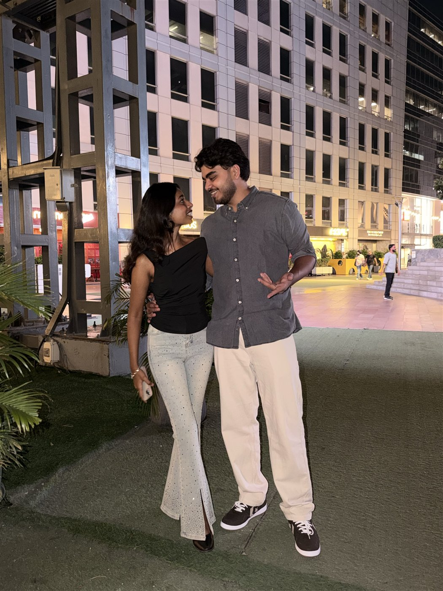
five years of loving you.
still my favourite thing to do.
for the girl who makes
me look at the moon
after every call.
we knew each other since childhood. then came a wedding, a first move by yours truly, and suddenly... you became my favourite person.
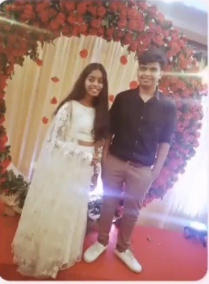
childhood se jaante the ek dusre ko, but this time something was different. i made the first move. best decision, obviously.
gorakhpur. finally meeting you again, and getting another little memory that i still get to keep.
kashmere gate metro. who knew a metro station could become a part of our love story huhhh.
saket. you and me. the start of so many more dates, mirror selfies, and finding excuses to spend a little longer together.
we had our time apart. then we met again. and somehow, coming back to you felt like coming home.
nothing too fancy. just you, me, and probably something to eat.
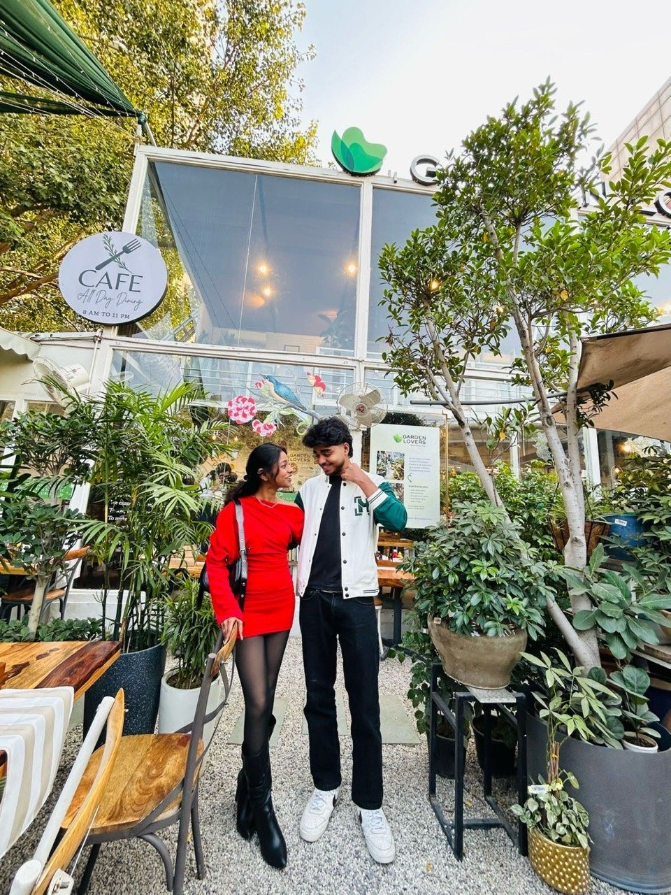
you find the aesthetic café. i find a reason to keep looking at you.
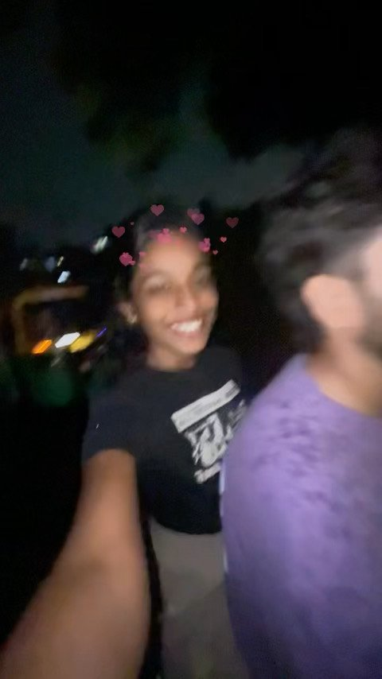
scooty rides, long walks, and taking the longer way just because you’re with me.
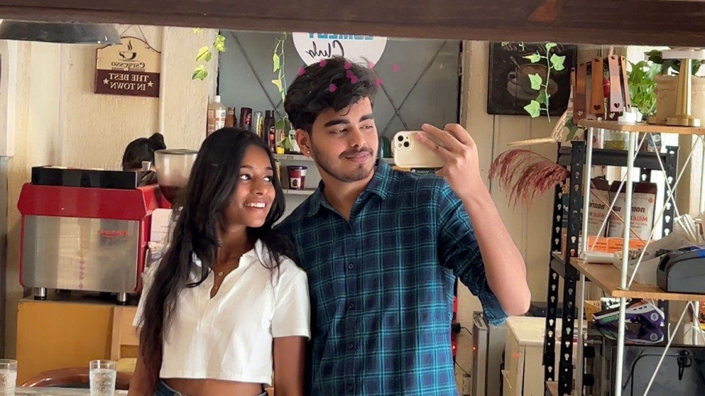
sector 31 food market. momo dates. maggi, waffles, nutties. your kind of happiness.
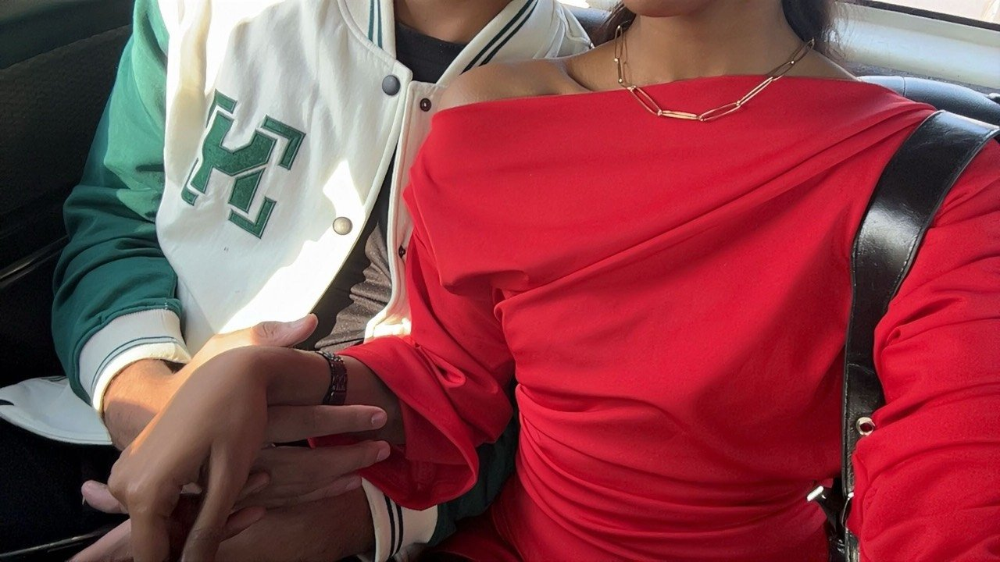
some days i don’t need a big plan. i just need your hand in mine.
every time you tell me to look at it, i get one more reason to think about you. as if i needed help with that.
yes, this whole section is about you.
try not to let it get to your head.
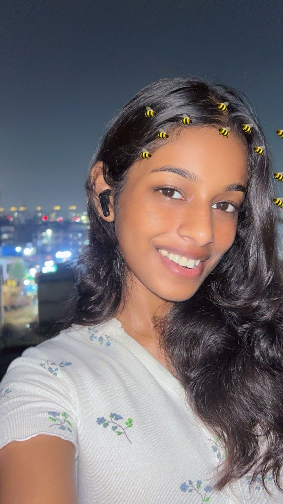
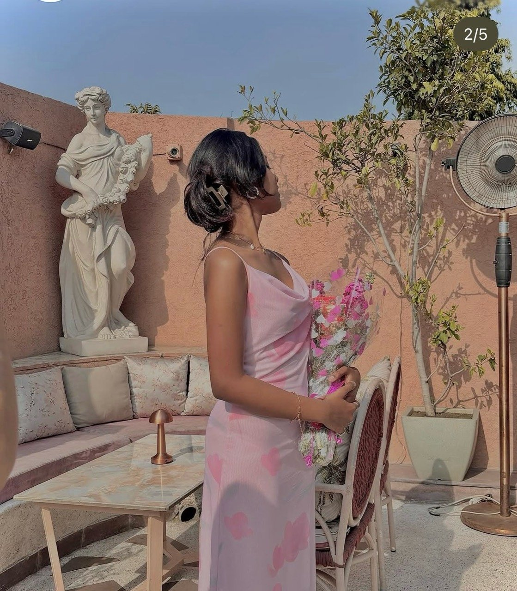
i love how disciplined you are. the way you do your things, the way you keep going. i admire that about you so much.
whatever i do, you support me. having you in my corner means more to me than i probably say enough.
my family, my friends... everyone loves you as much as i do. i mean, can’t really blame them.
luffy can be king of the pirates.
you’re still the princess here.
your gussa has a full-time content creator.
“hey guys this is day 69 of me manaoing yashi as she is again gussa”— your very professional boyfriend
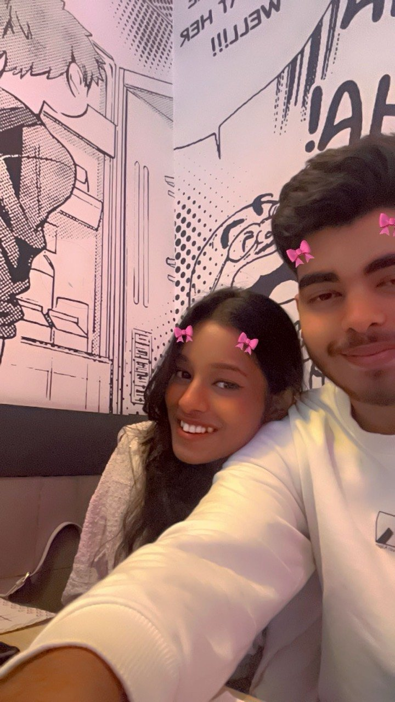
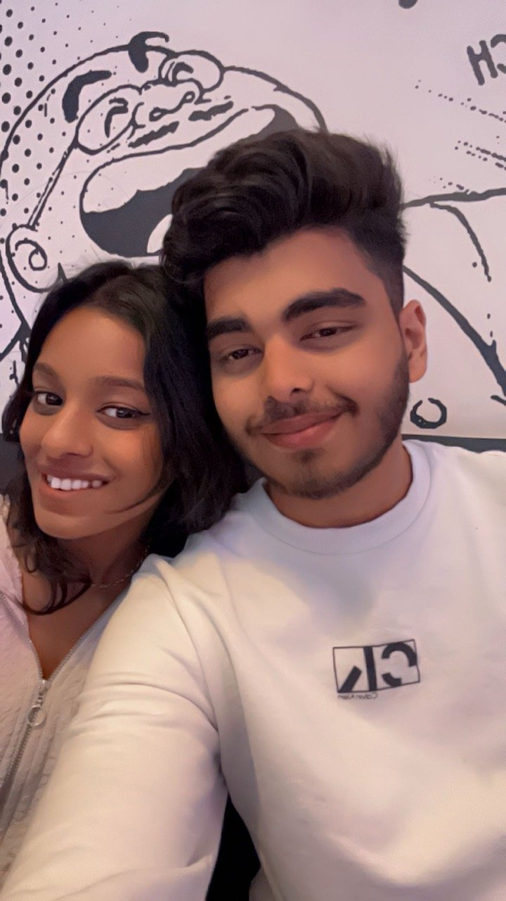
you trying to stay serious at my not so funny jokes
is still one of my favourite things.
because some memories need a little movement.
the cute ones. the blurry ones.
the “take one more” ones.
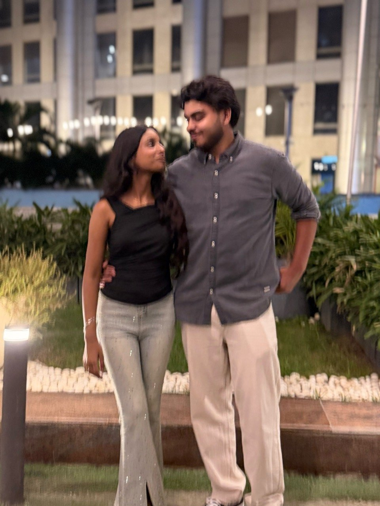
these last 3 months haven’t been easy. we’ve fought a lot, and i know it’s been difficult for us.
but i feel like we’re finding our way again. things are getting better, and that means so much to me.
i love you, yashu. i want more walks with you, more ridiculous vlogs, more momo dates. more of us.
one little step at a time, cutu.you love handwritten letters.
so here’s a little piece of my heart.
i hope you like this small gesture for you. i love you so much and will always love you till my last breath, also meet me soon because the weather is cold outside and i need my cuddles huhhh!
yours, always.
ansh
also , through this letter , i am asking you out on a date
i will tell you the location soon
you. me. a proper date.
so, what do you say, princess?